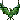

260331 - Quest bosco elfico 1 - Vahn Maseeri Izayoi Mynoth Euridas
La pedana si apre davanti a voi come un nastro sospeso tra mondi: non un semplice passaggio, ma l’ingresso a una cattedrale vivente. Ai lati si ergono alberi così antichi che le loro chiome sembrano sostenere il cielo; i tronchi sono colonne spiraleggianti, ricoperte di licheni e solchi dove la memoria della foresta ha inciso nomi e segni del tempo. Le fronde si intrecciano in arcate, formando volte che filtrano la luna in lame d’argento e ombre scure; ogni foglia vibra come corde tese di un’arpa giganta, e il loro fruscio non è più un suono ma uno strato di canto sommesso, antico come il respiro del mondo.
La passerella è costruita con assi consumate e corde di radice intrecciate, un’arte silvana che fonde il vivo e l’artigianato: su alcune tavole il muschio ha preso il sopravvento, su altre la corteccia è liscia come pelle, lucida di linfa; in certi punti la superficie scricchiola emettendo un gemito profondo. Piccole vene verdi, quasi fosforescenti, scorrono lungo le travi, e al bordo il muschio si solleva in piccole spore che brillano come cenere di stelle. L’aria è greve: un misto di resina, terra bagnata e un sentore metallico che punge la lingua; ogni inalazione lascia l’impressione di respirare la storia stessa del bosco, insieme al suo dolore. Quando i vostri occhi scendono oltre il corridoio di legno, il bosco si apre e vi guarda come una ferita esposta. Non è la semplice rovina di qualche albero antico: è una metamorfosi che palpita. Le cortecce, lì dove la malattia ha attecchito, hanno perso la loro durezza; appaiono sottili come pelle translucida, tendenti al verdastro, e sotto di esse una linfa densa scorre lenta come sangue strangolato. In certe fessure la luce della luna filtra e si piega in tonalità innaturali, un porpora smorto che sfuma in giallo bilioso, e la corteccia sembra quasi gelatinosa, mossa da un moto interno che ricorda l’alga più che il legno.
Sotto la pedana, l’ombra precipita in un crepaccio: non un semplice vuoto ma una bocca nera che scende per decine di metri, le radici sporgono come zanne, penzolano a mezz’aria e si contorcono attorno a correnti d’aria umida. Dalla gola del crepaccio sale un’eco, un gocciolio irregolare, il lontano respiro di acque sotterranee; in certe notti sembra che la terra sospiri. Percorrere la passerella significa camminare sopra quella voragine: la strada semplice, quella che conduce dritta al cuore del Bosco Elfico, è appoggiata alla memoria degli alberi e al filo della sorveglianza silvana.
Qualcuno, tempo fa, ha indicato questa via come la più prudente: Sylwen Lóthienar inviò a Vahn una missiva in cui consigliava di presentarsi lungo queste passerelle. È la strada che porta all’Albero Madre, la via ufficiale che unisce radici e ponti; chi la percorre si presenta sotto gli occhi dei Custodi delle Fronde, sotto le orecchie attente dei gufi che, appollaiati sulle branche più alte, osservano e vigliano con occhi liquidi e immensi. I loro richiami, bassi e ritmati, risuonano come battiti in lontananza.
OFF: BENVENUTI! TURNI LIBERI.
21:42 Maseeri
Maseeri  [Avanza senza fretta sulla passerella, lasciando che il legno antico riconosca il suo peso prima ancora dei passi. Indossa calzoni neri morbidi, aderenti quanto basta a non impigliare il movimento, e sopra una tunica lunga fino a metà coscia, dello stesso tono scuro ma attraversata da sottili ricami tono su tono: trame di foglie stilizzate e linee curve che sembrano seguire il respiro del corpo più che un disegno preciso. Le maniche, a tre quarti, si aprono appena verso il polso, lasciando scoperta la pelle chiara e sottile, attraversata da vene leggere. Sulle spalle porta una mantella leggera, color grigio fumo, fissata da un fermaglio d’argento a tre piccole stelle. Il tessuto non cade rigido: segue ogni movimento con una lentezza quasi liquida, come se fosse più aria che stoffa. Alla cintura, stretta ma discreta, è agganciato un flauto d’argento e una piccola sacca di pelle scura. I capelli, intrecciati in molte piccole trecce sottili, sono raccolti in parte dietro la nuca, lasciando libere alcune ciocche che il vento muove appena. Nessun gioiello vistoso, nessuna ostentazione: solo una presenza costruita per essere letta senza essere invadente.Quand o il legno sotto i piedi scricchiola, non corregge il passo: lo accoglie.E quando il canto sommesso delle fronde si alza, inclina appena il capo, come chi riconosce un linguaggio e sceglie di non interromperlo.La mano sinistra sfiora per un istante la corda intrecciata della passerella, non per cercare equilibrio, ma per segnare presenza.] ..eccoci arrivati [ mormora, poi prosegue, lanciando un’occhiata al fratello, quieta]
[Avanza senza fretta sulla passerella, lasciando che il legno antico riconosca il suo peso prima ancora dei passi. Indossa calzoni neri morbidi, aderenti quanto basta a non impigliare il movimento, e sopra una tunica lunga fino a metà coscia, dello stesso tono scuro ma attraversata da sottili ricami tono su tono: trame di foglie stilizzate e linee curve che sembrano seguire il respiro del corpo più che un disegno preciso. Le maniche, a tre quarti, si aprono appena verso il polso, lasciando scoperta la pelle chiara e sottile, attraversata da vene leggere. Sulle spalle porta una mantella leggera, color grigio fumo, fissata da un fermaglio d’argento a tre piccole stelle. Il tessuto non cade rigido: segue ogni movimento con una lentezza quasi liquida, come se fosse più aria che stoffa. Alla cintura, stretta ma discreta, è agganciato un flauto d’argento e una piccola sacca di pelle scura. I capelli, intrecciati in molte piccole trecce sottili, sono raccolti in parte dietro la nuca, lasciando libere alcune ciocche che il vento muove appena. Nessun gioiello vistoso, nessuna ostentazione: solo una presenza costruita per essere letta senza essere invadente.Quand o il legno sotto i piedi scricchiola, non corregge il passo: lo accoglie.E quando il canto sommesso delle fronde si alza, inclina appena il capo, come chi riconosce un linguaggio e sceglie di non interromperlo.La mano sinistra sfiora per un istante la corda intrecciata della passerella, non per cercare equilibrio, ma per segnare presenza.] ..eccoci arrivati [ mormora, poi prosegue, lanciando un’occhiata al fratello, quieta]
Maseeri [Avanza senza fretta sulla passerella, lasciando che il legno antico riconosca il suo peso prima ancora dei passi. Indossa calzoni neri morbidi, aderenti quanto basta a non impigliare il movimento, e sopra una tunica lunga fino a metà coscia, dello stesso tono scuro ma attraversata da sottili ricami tono su tono: trame di foglie stilizzate e linee curve che sembrano seguire il respiro del corpo più che un disegno preciso. Le maniche, a tre quarti, si aprono appena verso il polso, lasciando scoperta la pelle chiara e sottile, attraversata da vene leggere. Sulle spalle porta una mantella leggera, color grigio fumo, fissata da un fermaglio d’argento a tre piccole stelle. Il tessuto non cade rigido: segue ogni movimento con una lentezza quasi liquida, come se fosse più aria che stoffa. Alla cintura, stretta ma discreta, è agganciato un flauto d’argento e una piccola sacca di pelle scura. I capelli, intrecciati in molte piccole trecce sottili, sono raccolti in parte dietro la nuca, lasciando libere alcune ciocche che il vento muove appena. Nessun gioiello vistoso, nessuna ostentazione: solo una presenza costruita per essere letta senza essere invadente.Quand o il legno sotto i piedi scricchiola, non corregge il passo: lo accoglie.E quando il canto sommesso delle fronde si alza, inclina appena il capo, come chi riconosce un linguaggio e sceglie di non interromperlo.La mano sinistra sfiora per un istante la corda intrecciata della passerella, non per cercare equilibrio, ma per segnare presenza.] ..eccoci arrivati [ mormora, poi prosegue, lanciando un’occhiata al fratello, quieta]21:48 Euridas L’elfo e’ alto un metro ed ottantacinque, ha occhi verdi, capelli lunghi, bianchi, che cadono sia dietro sia dinanzi le spalle. La carnagione e’ chiara. Indossa una corazza toracica composta da strati di metallo nero, fusi con rame brunito ed ombre che si intrecciano in motivi che ricordano code di draghi. Le spalle sono coperte da spallacci di acciaio annerito, decorati con rilievi a forma di draghi incatenati. Le linee sono affilate, frastagliate, come se l’armatura stessa potesse ferire. Le spalline raffigurano simboli oscuri. Le braccia sono protette da avambracci articolati raffiguranti la figura di un Drago. In vita, una cintura borchiata in acciaio scuro ed ossidiana, decorata con una fibbia a forma di teschio di Drago ruggente. Le gambe, invece, sono coperte da gambali lamellari. Le ginocchiere sono affilate verso l’esterno, intagliate con motivi simili ad ali spezzate. Gli stivali sono rinforzati con piastre di draconite annerita.. Le punte sono lievemente ricurve verso l’alto. Agganciato all’armatura alla base del collo un mantello, che scende come un flusso di tenebra liquida, cucito con fili d’argento lunare. Non reca armi con se, o almeno cosi’ sembrerebbe. Le mani sono prive dei guanti d’arme che normalmente indossa. La destra e’ celata dal mantello che copre anche la parte anteriore del fianco. Non parla. Invero non l'ha fatto da quando tutti hanno avuto accesso al Bosco Elfico. Solo uno sguardo verso Izayoi, verso la quale muove impercettibilmente il capo in un cenno d'assenso, prima di tornare a guardarsi intorno.
21:50Izayoi
Izayoi 
L’abito che indossa questa sera non rappresenta la solita sobria austerità, ma appare più elegante di ciò che è consueta utilizzare. La stoffa nera, soffice e di pregiata fattura, calda sulla sua pelle, di un nero profondo e opaco, avvolge il suo corpo componendosi in una tunica che lascia cadere morbidi drappeggi lungo l’esilità delle sue curve. La parte superiore presenta una scollatura appena accennata, a cuore, sostenuta da una struttura interna rigida che ne definisce il busto. La schiena è lasciata scoperta, il tessuto del manto delle Fenici che vi si appoggia a celare la nudità delle sue scapole. I bordi sono decorati da filamenti ricamati che rassomigliano a trame arcane, dalle spalle partono lunghi veli stratificati che scendono sulle sue braccia come un mantello. La parte inferiore dell’abito è lungo e cade morbido sulle gambe affusolate. Con sé porta una borsa in cuoio nero, pesante e voluminosa, non solo per le componenti arcane che vi sono custodite, ma anche per ciò che è stata incaricata di condurre. I lunghissimi crini corvini sono legati in una treccia morbida su cui si posano forcine a forma di fiore, gigli dai petali d’opale. Lo sguardo si sposta sugli alberi attorno a sé, là dove la malattia par essere giunta e aver divorato la vita. La sua espressione non manifesta nulla, appare vuota come se una maschera di inespressività celasse l’ovale affusolato del suo volto. I suoi occhi sono apparentemente specchi privi di un’anima, il suo incarnato di un pallore quasi etereo. Occhi del colore delle foglie primaverili e oro fuso si spostano sul crepaccio, scrutando le radici là sospese, le labbra si assottigliano appena, il passo che quasi senza rumore s’avanza in quella passerella. Gli occhi di Euridas si posano su di lei, ed ella ne ricambia lo sguardo senza dar voce alcuna ai suoi pensieri, poi uno sguardo vacuo vien lanciato verso gli altri membri della delegazione, alcuni a malapena scorti, altri volti ignoti.21:53 Mynoth [il Silvano avanza unito al gruppo, in silenzio, come se ogni passo potesse risvegliare qualcosa che dorme appena sotto la superficie della terra. Di verde vestito, in onore alle sue origine, incede, tenendo il passo col battere del suo fidato bastone sulle assi consumate, che di rimando producono un rumore sordo e a tratti malandato. Sul viso del mago, sporadici raggi lunari, trattenuti dalle fronde che si fondono in arcate, alte e fiere all'apparenza, ma con un rapida occhiata, continuando verso i tronchi che le sostengono, nota anormali luccichi e stanche venature sulla corteccia toccata da un oscuro malessere, che rende il tutto meno vivido e un pò decadente. Con la mano rimasta libera, incuriosito, va a sfiorare uno di quei tronchi, lasciandosi andare in un'affermazione tinta da un tono di voce preoccupato] Qualcosa sembrerebbe consumare dall' interno questi arbust, qualcosa sembra intenzionato a trasformate quest'antico bosco [non prosegue nel suo dire, lasciando spazio al silenzio e al lieve scricchiolio che produceva la passerella, continuando a sfiorare i tronchi per qualche istante]
Mynoth [il Silvano avanza unito al gruppo, in silenzio, come se ogni passo potesse risvegliare qualcosa che dorme appena sotto la superficie della terra. Di verde vestito, in onore alle sue origine, incede, tenendo il passo col battere del suo fidato bastone sulle assi consumate, che di rimando producono un rumore sordo e a tratti malandato. Sul viso del mago, sporadici raggi lunari, trattenuti dalle fronde che si fondono in arcate, alte e fiere all'apparenza, ma con un rapida occhiata, continuando verso i tronchi che le sostengono, nota anormali luccichi e stanche venature sulla corteccia toccata da un oscuro malessere, che rende il tutto meno vivido e un pò decadente. Con la mano rimasta libera, incuriosito, va a sfiorare uno di quei tronchi, lasciandosi andare in un'affermazione tinta da un tono di voce preoccupato] Qualcosa sembrerebbe consumare dall' interno questi arbust, qualcosa sembra intenzionato a trasformate quest'antico bosco [non prosegue nel suo dire, lasciando spazio al silenzio e al lieve scricchiolio che produceva la passerella, continuando a sfiorare i tronchi per qualche istante]
Mynoth [il Silvano avanza unito al gruppo, in silenzio, come se ogni passo potesse risvegliare qualcosa che dorme appena sotto la superficie della terra. Di verde vestito, in onore alle sue origine, incede, tenendo il passo col battere del suo fidato bastone sulle assi consumate, che di rimando producono un rumore sordo e a tratti malandato. Sul viso del mago, sporadici raggi lunari, trattenuti dalle fronde che si fondono in arcate, alte e fiere all'apparenza, ma con un rapida occhiata, continuando verso i tronchi che le sostengono, nota anormali luccichi e stanche venature sulla corteccia toccata da un oscuro malessere, che rende il tutto meno vivido e un pò decadente. Con la mano rimasta libera, incuriosito, va a sfiorare uno di quei tronchi, lasciandosi andare in un'affermazione tinta da un tono di voce preoccupato] Qualcosa sembrerebbe consumare dall' interno questi arbust, qualcosa sembra intenzionato a trasformate quest'antico bosco [non prosegue nel suo dire, lasciando spazio al silenzio e al lieve scricchiolio che produceva la passerella, continuando a sfiorare i tronchi per qualche istante]21:56Vahn [Vahn indossa un completo da missione diplomatica sobrio e pratico: una tunica lunga color prugna polveroso è stratificata sotto un soprabito corto e avvolgente nei toni del grigio corteccia, chiuso in vita da una cintura di cuoio con piccole tasche e dettagli in metallo brunito. Alla vita è assicurata la spada consacrata elfica, e una piccola sacca da viaggio di cuoio scura. Un morbido drappo viola, che ricorda i tessuti di Schuameb, è fissato con ordine attorno al collo e alle spalle con un’eleganza discreta. I pantaloni scuri sono stretti quel tanto che basta per facilitare il passo, infilati in stivali alti da cammino in cuoio morbido, robusti. Completano l’insieme la tracolla del liuto, portato aderente al corpo.]…già. [Dice senz’enfasi, rispondendo a Maseeri e rimanendo vicino a lei. Gli occhi del bardo, dal taglio malinconico, si soffermano sui dettagli più truci e malati delle cortecce, su quella linfa morta e sofferente.]..l’emissaria delle Ombre Verdi era stata specifica...se questa è la via più sicura…[guarda per un attimo dentro al baratro scuro sotto di loro]…mi chiedo…[lascia cadere la frase, come se non avesse la forza di continuarla. Si volta a guardare Euridas e Izayoi, ai quali rivolge un silenzioso cenno del capo. Poi alle parole di Mynoth chiede]…notate delle differenze con gli umori che infestavano il Bosco Sacro? [la voce è spenta, accademica, senza verve.]
Vahn [Vahn indossa un completo da missione diplomatica sobrio e pratico: una tunica lunga color prugna polveroso è stratificata sotto un soprabito corto e avvolgente nei toni del grigio corteccia, chiuso in vita da una cintura di cuoio con piccole tasche e dettagli in metallo brunito. Alla vita è assicurata la spada consacrata elfica, e una piccola sacca da viaggio di cuoio scura. Un morbido drappo viola, che ricorda i tessuti di Schuameb, è fissato con ordine attorno al collo e alle spalle con un’eleganza discreta. I pantaloni scuri sono stretti quel tanto che basta per facilitare il passo, infilati in stivali alti da cammino in cuoio morbido, robusti. Completano l’insieme la tracolla del liuto, portato aderente al corpo.]…già. [Dice senz’enfasi, rispondendo a Maseeri e rimanendo vicino a lei. Gli occhi del bardo, dal taglio malinconico, si soffermano sui dettagli più truci e malati delle cortecce, su quella linfa morta e sofferente.]..l’emissaria delle Ombre Verdi era stata specifica...se questa è la via più sicura…[guarda per un attimo dentro al baratro scuro sotto di loro]…mi chiedo…[lascia cadere la frase, come se non avesse la forza di continuarla. Si volta a guardare Euridas e Izayoi, ai quali rivolge un silenzioso cenno del capo. Poi alle parole di Mynoth chiede]…notate delle differenze con gli umori che infestavano il Bosco Sacro? [la voce è spenta, accademica, senza verve.]Bill ti sussurra: tiradadi20
Euridas , tirando i dadi, ha ottenuto un punteggio di 12 su 20
Vahn , tirando i dadi, ha ottenuto un punteggio di 1 su 20
Maseeri, sotto la tua suola corre un brontolio sottile come il respiro di un animale che si sveglia: le assi vibrano a una frequenza sorda, le corde intonano sibili diversi al passaggio del peso, alcune note vuote, altre ruvide, come se la passerella stesse contando i vostri passi. Euridas intravedi, ai margini, placche scure incastrate nel muschio: scaglie verdi che luccicano malate. Izayoi nota un alone verdastro intorno alle venature, una foschia che si ritira al tocco della luce; le spore salgono ordinate, come fili tessuti da una mano. Quando il dito di Mynoth sfiora la corteccia il bosco risponde con un crepitio profondo: la superficie, che fino a un attimo prima pareva fredda e semitraslucida, cede in una fessura sottile. Esala un alito umido, poi un filo di linfa color bile scorre e brilla sotto la luna come vetro avvelenato. Infine Vahn, avverti che l’aria sembra risucchiata; le spore tremolano come candele nel vento. Poi il tradimento: una tavola si spezza con un colpo netto. Il tuo stivale resta appeso al margine del vuoto, la voragine nera sotto.
22:24Maseeri [si ferma, ascolta, abbassa il capo e prova ad avanzare un passo, ma obliquo, di nuovo ascolta, sfiora le corde con la punta delle dita, respira profondamente, la mano libera corre al flauto, pensierosa, si volta appena] è qualcosa? O qualcuno? [domanda ai compagni dietro di lei, l’abitudine di apripista la fa fermare di nuovo quando sente l’asse rompersi si volta e vede il fratello rimanere impigliato, allarmata si blocca, trattiene il fiato poi sibila piano] Mellonamin [accenna a fare un passo indietro ma ascolta quella specie di respito e guarda gli altri, interrogativa] aiutatelo vi prego [resta ferma poi aggiunge] in qualche modo non vorrei che tornando indietro io finisca i miei passi
Maseeri [si ferma, ascolta, abbassa il capo e prova ad avanzare un passo, ma obliquo, di nuovo ascolta, sfiora le corde con la punta delle dita, respira profondamente, la mano libera corre al flauto, pensierosa, si volta appena] è qualcosa? O qualcuno? [domanda ai compagni dietro di lei, l’abitudine di apripista la fa fermare di nuovo quando sente l’asse rompersi si volta e vede il fratello rimanere impigliato, allarmata si blocca, trattiene il fiato poi sibila piano] Mellonamin [accenna a fare un passo indietro ma ascolta quella specie di respito e guarda gli altri, interrogativa] aiutatelo vi prego [resta ferma poi aggiunge] in qualche modo non vorrei che tornando indietro io finisca i miei passi22:31Euridas  [Passerella - Bosco Elfico] [Avanza lentamente, tenendo lo sguardo su quelle placche scure che sembrano essersi fuse con il muschio per poi fuoriuscire da esso, incastrate e mischiate a scaglie verdi.] Izayoi. [Chiama, con il suo tono di voce grave, poco piu' che sussurrato, restando dritto nella postura] La corruzione si espande troppo velocemente. [Proprio nel momento in cui solleva la mano per indicarle il punto in cui ha notato quelle alterazioni, il rumore della tavola che si spezza lo fa voltare di scatto. Inspira, profondamente] Fermi. Non muovetevi tutti. Mynoth, siete il piu' vicino. Tendete il braccio ma non portate il vostro peso nei pressi della tavola danneggiata. [Parla lentamente, con tono di voce calmo, privo di preoccupazione apparente.]
[Passerella - Bosco Elfico] [Avanza lentamente, tenendo lo sguardo su quelle placche scure che sembrano essersi fuse con il muschio per poi fuoriuscire da esso, incastrate e mischiate a scaglie verdi.] Izayoi. [Chiama, con il suo tono di voce grave, poco piu' che sussurrato, restando dritto nella postura] La corruzione si espande troppo velocemente. [Proprio nel momento in cui solleva la mano per indicarle il punto in cui ha notato quelle alterazioni, il rumore della tavola che si spezza lo fa voltare di scatto. Inspira, profondamente] Fermi. Non muovetevi tutti. Mynoth, siete il piu' vicino. Tendete il braccio ma non portate il vostro peso nei pressi della tavola danneggiata. [Parla lentamente, con tono di voce calmo, privo di preoccupazione apparente.]
Euridas [Passerella - Bosco Elfico] [Avanza lentamente, tenendo lo sguardo su quelle placche scure che sembrano essersi fuse con il muschio per poi fuoriuscire da esso, incastrate e mischiate a scaglie verdi.] Izayoi. [Chiama, con il suo tono di voce grave, poco piu' che sussurrato, restando dritto nella postura] La corruzione si espande troppo velocemente. [Proprio nel momento in cui solleva la mano per indicarle il punto in cui ha notato quelle alterazioni, il rumore della tavola che si spezza lo fa voltare di scatto. Inspira, profondamente] Fermi. Non muovetevi tutti. Mynoth, siete il piu' vicino. Tendete il braccio ma non portate il vostro peso nei pressi della tavola danneggiata. [Parla lentamente, con tono di voce calmo, privo di preoccupazione apparente.]22:37Izayoi [Passerella - Bosco Elfico] Il suo portamento è nobiliare, la grazia tipicamente elfica in ella si esprime con una naturalezza assoluta, il suo corpo che muove con un’eleganza quasi ieratica: una sacerdotessa che attraversa la navata di un tempio. Eppure, qui non vi sono colonne, ma alberi morenti, consumati dalla malattia, che accompagnano il suo passo. Se prova del disagio, non lo manifesta, ma l’espressione è intrappolata in una gravità profonda. Il suo sguardo rimane attento attorno a sé, i suoi occhi che scorgono l’alone verdastro attorno alle venature e quella che par la sua reazione al manifestarsi della luce. Gli occhi si soffermano su di queste per lunghi istanti, come analizzando le spore che risalgono, mentre i respiri si fanno meno profondi, istintivamente. La mano destra si alza a sollevare la manica larga sulle mani e la conduce innanzi al naso, come nel timore che quell’alone possa in qualche modo essere insalubre, annuisce all’indirizzo di Euridas <Mi domando se anche Tellar sia stato divorato nello stesso modo> sussurra in sua risposta. Le parole di Mynoth giungono alle fine orecchie elfiche, la constatazione dell’ovvio, poi i suoi occhi scorrono su Vahn alla domanda che rivolge al mago, l’attenzione che si rivolge a lui, appena prima che il suo piede finisca in fallo. La muscolatura si irrigidisce, come se il suo corpo fosse pronto a reagire, ma subito va a placarsi, le parole di Maseeri che sembrano rappresentare anche la sua verità. I suoi passi sembrano quasi sospesi, come se fosse incerta se avanzare o meno, ma infine il suo corpo permane statico mentre rapidamente va a ricercare la concentrazione. La sua aura freme, la trama oscura che s’intreccia con sottili scintille elettriche mentre tenta di entrare in sintonia con l’aria attorno a sé, quell’elemento che le è così affine. Le mani si muovono leggere, come se toccasse delle corde invisibili mentre tenta di condensare la sua energia sotto la passerella, un vento localizzato che non vorrebbe smuoverla o sfiorarla direttamente, ma creare una piccola colonna d’aria sotto al piene di Vahn, non una risoluzione, ma sperabilmente un aiuto che possa dargli una spinta per riuscire a fargli risollevare il piede ed estrarlo dall’asse danneggiata. {Manipolazione Naturale Aria 9}
Izayoi [Passerella - Bosco Elfico] Il suo portamento è nobiliare, la grazia tipicamente elfica in ella si esprime con una naturalezza assoluta, il suo corpo che muove con un’eleganza quasi ieratica: una sacerdotessa che attraversa la navata di un tempio. Eppure, qui non vi sono colonne, ma alberi morenti, consumati dalla malattia, che accompagnano il suo passo. Se prova del disagio, non lo manifesta, ma l’espressione è intrappolata in una gravità profonda. Il suo sguardo rimane attento attorno a sé, i suoi occhi che scorgono l’alone verdastro attorno alle venature e quella che par la sua reazione al manifestarsi della luce. Gli occhi si soffermano su di queste per lunghi istanti, come analizzando le spore che risalgono, mentre i respiri si fanno meno profondi, istintivamente. La mano destra si alza a sollevare la manica larga sulle mani e la conduce innanzi al naso, come nel timore che quell’alone possa in qualche modo essere insalubre, annuisce all’indirizzo di Euridas <Mi domando se anche Tellar sia stato divorato nello stesso modo> sussurra in sua risposta. Le parole di Mynoth giungono alle fine orecchie elfiche, la constatazione dell’ovvio, poi i suoi occhi scorrono su Vahn alla domanda che rivolge al mago, l’attenzione che si rivolge a lui, appena prima che il suo piede finisca in fallo. La muscolatura si irrigidisce, come se il suo corpo fosse pronto a reagire, ma subito va a placarsi, le parole di Maseeri che sembrano rappresentare anche la sua verità. I suoi passi sembrano quasi sospesi, come se fosse incerta se avanzare o meno, ma infine il suo corpo permane statico mentre rapidamente va a ricercare la concentrazione. La sua aura freme, la trama oscura che s’intreccia con sottili scintille elettriche mentre tenta di entrare in sintonia con l’aria attorno a sé, quell’elemento che le è così affine. Le mani si muovono leggere, come se toccasse delle corde invisibili mentre tenta di condensare la sua energia sotto la passerella, un vento localizzato che non vorrebbe smuoverla o sfiorarla direttamente, ma creare una piccola colonna d’aria sotto al piene di Vahn, non una risoluzione, ma sperabilmente un aiuto che possa dargli una spinta per riuscire a fargli risollevare il piede ed estrarlo dall’asse danneggiata. {Manipolazione Naturale Aria 9}22:42 Mynoth [Passerella/Bosco Elfico] [il mago avanza di un passo rispetto al gruppo, rompendo quasi le righe. La sua mano libera insiste nel contatto con la corteccia. Tenta un qualche tipo di connessione, provando ad ottenere maggiori risposte a ciò che vede, provando a capire come mai quegli arbusti abbiano quei giochi di luminescenze, senza però riuscire nell'intento interrotto dal dire di Van, verso il quale prova a replicare] Ci sono indizi che...[s'interrompe di colpo, sentendo un improvviso rumore differente da quelli finora uditi. Le orecchie puntute vibrano, quasi in allerta, percependo un movimento improvviso che percuotono le corde lungo la passerelle. Il capo si volge rapido, prima verso destra poi alla di lui sinistra, quasi in uno spasmo incontrollato, tornando però prontamente quindi a ciò che ha di fronte a se, dimenticandosi del contatto trattenuto finora con l'antico tronco, spalancando le palpebre a ciò che vede] Ma che cosa sta succedendo! [si ritrae, indietreggia quasi spaventato senza però definitivamente perdersi d'animo, cercando di restare vigile] Non è più linfa è corruzione che imita la vita! [la voce è tesa ora, ma un risucchio mette un punto alle sue affermazioni, proteso verso Vahn] Attenzione! [urla, ma la passerella si apre, lasciando il parirazza sospeso di fronte al gruppo. Un abisso senza fondo apparente, sotto i lui intravede solo oscurità
Mynoth [Passerella/Bosco Elfico] [il mago avanza di un passo rispetto al gruppo, rompendo quasi le righe. La sua mano libera insiste nel contatto con la corteccia. Tenta un qualche tipo di connessione, provando ad ottenere maggiori risposte a ciò che vede, provando a capire come mai quegli arbusti abbiano quei giochi di luminescenze, senza però riuscire nell'intento interrotto dal dire di Van, verso il quale prova a replicare] Ci sono indizi che...[s'interrompe di colpo, sentendo un improvviso rumore differente da quelli finora uditi. Le orecchie puntute vibrano, quasi in allerta, percependo un movimento improvviso che percuotono le corde lungo la passerelle. Il capo si volge rapido, prima verso destra poi alla di lui sinistra, quasi in uno spasmo incontrollato, tornando però prontamente quindi a ciò che ha di fronte a se, dimenticandosi del contatto trattenuto finora con l'antico tronco, spalancando le palpebre a ciò che vede] Ma che cosa sta succedendo! [si ritrae, indietreggia quasi spaventato senza però definitivamente perdersi d'animo, cercando di restare vigile] Non è più linfa è corruzione che imita la vita! [la voce è tesa ora, ma un risucchio mette un punto alle sue affermazioni, proteso verso Vahn] Attenzione! [urla, ma la passerella si apre, lasciando il parirazza sospeso di fronte al gruppo. Un abisso senza fondo apparente, sotto i lui intravede solo oscurità22:48Vahn [passerella/bosco elfico] [torna a guardare Maseeri con occhi distratti mentre cammina]…non senti anche tu l’aria pensante? [sospira, titubante]…non lo so, a me questo ponte sembra tutto fuorché sicur—*CRACK*—oooHHAA! [un moto di spavento quando l’asse cede e si ritrova con un piede nel vuoto. D’istinto allarga le braccia, cercando con le mani di reggersi a ciò che troverà più vicino: alla corda che regge la passerella, alle assi stesse o ad un’eventuale mano. Cerca di sbilanciarsi col busto in avanti, di appiattirsi per non premere con tutto il peso su una singola asse marcia.]…Flean ballerino!
Vahn [passerella/bosco elfico] [torna a guardare Maseeri con occhi distratti mentre cammina]…non senti anche tu l’aria pensante? [sospira, titubante]…non lo so, a me questo ponte sembra tutto fuorché sicur—*CRACK*—oooHHAA! [un moto di spavento quando l’asse cede e si ritrova con un piede nel vuoto. D’istinto allarga le braccia, cercando con le mani di reggersi a ciò che troverà più vicino: alla corda che regge la passerella, alle assi stesse o ad un’eventuale mano. Cerca di sbilanciarsi col busto in avanti, di appiattirsi per non premere con tutto il peso su una singola asse marcia.]…Flean ballerino!Euridas ti sussurra: //Vahn dog
Vahn sussurra a Euridas: <3
L’aria si addensa intorno a Vahn come se il bosco avesse trattenuto il fiato per offrirgli una mano: un cilindro di respiro tiepido s’innalza dal vuoto, una colonna d’aria che lo solleva appena, compatta e discreta. La luna si frange su quella colonna in lamelle d’argento e verde pallido; polvere luminescente danza intorno, piccole lanterne che roteano lente e tracciano arabeschi nell’oscurità. Con quel sostegno invisibile Vahn riporta lo stivale sulla tavola, trova nuovamente equilibrio, e il controllo ritorna al suo corpo.
Un richiamo si leva dal cuore delle fronde: tocchi ritmati sulle cortecce, un battere sommesso che alterna tre colpi brevi e uno lungo, e poi un sussurro di foglie sfregate in controtempo. Chi conosce la lingua del bosco lo intuisce come una frase spezzata: “avvertenza — movimento — seconda linea”. Le note non sono casuali, si rincorrono da ramo a ramo come messaggi inviati con la pelle degli alberi; ad ogni ripetizione il tono scende, chiama rinforzi, unisce passi lontani. Lentamente, tra l’ombra, qualcosa si muove: sagome sottili che si staccano dalle sequoie, passi calibrati che non fanno più rumore di un respiro. Si avvicinano.
Intanto la passerella risponde peggio: le assi mordono l’aria con scatti più frequenti, le giunzioni sbuffano, una corda sibila e perde filamenti; il muschio cede a chiazze e lascia scoperte venature lucide. Dove prima la superficie pareva solo stanca, ora si incurva a tratti, formando leggere selle che obbligano al passo incerto; una spora verde si alza e rimane sospesa come un occhio acceso. Il legno non dice più soltanto “attento”: bisbiglia, si contrae e attende la vostra scelta.
23:07Maseeri [Un passo indietro,minimo, controllato,per uscire dalla tavola che si incurva e poi si ferma del tutto.Il peso si distribuisce. Ginocchia morbidi, .talloni leggeri; non cammina più., si sottrae al ritmo imposto. Il respiro si abbassa, lento, regolare, e per un istante sembra che il suo corpo faccia meno rumore della passerella stessa.sgancia il flauto e lo porta alle labbra: tre note, uguali al richiamo del bosco m brevi, nette.Una pausa. Poi una quarta, più lunga, ma più bassa, come se scendesse invece di salire. Non replica il messaggio. La sequenza si ripete una sola volta, poi si interrompe. Nessuna insistenza. Nel mentre, il piede cerca, non avanti, ma di lato, una tavola ancora stabile, testata senza carico pieno qualora il legno non risponda con quel fremito vivo, trasferirà una parte del peso.Lo sguardo resta sulle venature scoperte, sulle corde che cedono, sulle selle che si formano. E la voce, appena un filo] Non siamo la seconda linea.[ Non è per i suoi compagni, è per chi ascolta.]
Maseeri [Un passo indietro,minimo, controllato,per uscire dalla tavola che si incurva e poi si ferma del tutto.Il peso si distribuisce. Ginocchia morbidi, .talloni leggeri; non cammina più., si sottrae al ritmo imposto. Il respiro si abbassa, lento, regolare, e per un istante sembra che il suo corpo faccia meno rumore della passerella stessa.sgancia il flauto e lo porta alle labbra: tre note, uguali al richiamo del bosco m brevi, nette.Una pausa. Poi una quarta, più lunga, ma più bassa, come se scendesse invece di salire. Non replica il messaggio. La sequenza si ripete una sola volta, poi si interrompe. Nessuna insistenza. Nel mentre, il piede cerca, non avanti, ma di lato, una tavola ancora stabile, testata senza carico pieno qualora il legno non risponda con quel fremito vivo, trasferirà una parte del peso.Lo sguardo resta sulle venature scoperte, sulle corde che cedono, sulle selle che si formano. E la voce, appena un filo] Non siamo la seconda linea.[ Non è per i suoi compagni, è per chi ascolta.]23:14 Euridas [Passerella - Bosco Elfico] un lieve passo indietro anche per il Drago, non evidente ma atto a cercare una stabilita' maggiore uscendo dall'incurvatura che si sta formando. Poi, resta semplicemente immobile. Lo sguardo resta fisso su Vahn. La mascella si serra, evidentemente per l'impossibilita' di avvicinarsi egli stesso. La concentrazione e' tutta sull'equilibrio, il corpo fermo, immobile, mentre gli occhi si spostano poi su Izayoi.] Piano....verso di me... [Il suo dire e' poco piu' di un sussurro.]
23:20Izayoi [Passerella - Bosco Elfico] La mano sinistra permane sul volto, la stoffa nera che sfiora il naso, lasciando scoperti gli occhi a mandorla di colore verde intenso. Le dita della destra si muovono nell’aria, l’aura estesa che si protende senza che lei si muova di un singolo passo, la sua figura immobile, simile a un faro nelle tenebre, un sole nero che estende i suoi raggi verso l’elfo in difficoltà. E tuttavia, la direzione che acquisisce il suo potere è differente e ottiene l’effetto sperato, aiutando Vahn a liberarsi da quella morsa infausta. Il suo sguardo si sposta attorno a sé, su quelle sagome che si staccano dalle sequoie; la fronte si corruga, una leggera ruga tra le sopracciglia è l’unica espressione del suo disagio, le labbra si assottigliano mentre le mani corrono a una delle tasche della borsa, nel cercare la presenza rassicurante dei suoi componenti, le dita della destra vi si soffermano sull’artiglio di un rapace notturno che estrae e stringe nel palmo della mano. La passerella sembra sempre più instabile, più fragile ed ella cerca la stabilità nella passerella <Siamo sicuri che le fonti fossero affidabili?> domanda a Vahn che sembra custode dei rapporti diplomatici avvenuti fino ad adesso. Lo sguardo si sposta su Euridas che la richiama, poi sugli altri <Non siamo soli, ma dovremmo arrivare all’altro lato della passerella prima che questa ci crolli sotto i piedi. Cerchiamo di farlo con ordine, per quanto ci sarà concesso.> mormora, la sua voce è sempre bassa, controllata. Sembra saggiare il legno prima di spostarvi il peso, cercando di guadagnare terreno verso il Drago Nero. Lo sguardo scorre su Maseeri e tace alle sue parole, che non sembrano neanche rivolte a loro beneficio.
Izayoi [Passerella - Bosco Elfico] La mano sinistra permane sul volto, la stoffa nera che sfiora il naso, lasciando scoperti gli occhi a mandorla di colore verde intenso. Le dita della destra si muovono nell’aria, l’aura estesa che si protende senza che lei si muova di un singolo passo, la sua figura immobile, simile a un faro nelle tenebre, un sole nero che estende i suoi raggi verso l’elfo in difficoltà. E tuttavia, la direzione che acquisisce il suo potere è differente e ottiene l’effetto sperato, aiutando Vahn a liberarsi da quella morsa infausta. Il suo sguardo si sposta attorno a sé, su quelle sagome che si staccano dalle sequoie; la fronte si corruga, una leggera ruga tra le sopracciglia è l’unica espressione del suo disagio, le labbra si assottigliano mentre le mani corrono a una delle tasche della borsa, nel cercare la presenza rassicurante dei suoi componenti, le dita della destra vi si soffermano sull’artiglio di un rapace notturno che estrae e stringe nel palmo della mano. La passerella sembra sempre più instabile, più fragile ed ella cerca la stabilità nella passerella <Siamo sicuri che le fonti fossero affidabili?> domanda a Vahn che sembra custode dei rapporti diplomatici avvenuti fino ad adesso. Lo sguardo si sposta su Euridas che la richiama, poi sugli altri <Non siamo soli, ma dovremmo arrivare all’altro lato della passerella prima che questa ci crolli sotto i piedi. Cerchiamo di farlo con ordine, per quanto ci sarà concesso.> mormora, la sua voce è sempre bassa, controllata. Sembra saggiare il legno prima di spostarvi il peso, cercando di guadagnare terreno verso il Drago Nero. Lo sguardo scorre su Maseeri e tace alle sue parole, che non sembrano neanche rivolte a loro beneficio.23:22Mynoth [Passerella - Bosco Elfico] [il mago, si getta in avanti con movimenti controllati senza far oscillare ulteriormente le assi e la passerella, il di lui bastone proteso in avanti verso Vahn] Prendi! [grida, la voce tagliente come il vento tra le fronde. Ma prima che il parirazza posso godere del suo aiuto, una colonna improvvisa di lamelle saetta verso l'alto, sovrapposte come scaglie metalliche, avvolgendolo con un movimento innaturale riportandolo in equilibrio come se il vuoto stesso lo avesse rifiutato. Il bastone quindi viene ritirato, non servendo più allo scopo che il Silvano si era prefissato. Non fa in tempo a terminare quella sua ultima azione che tutt'attorno si ode un cadenzato e ritmato battere sugli arbusti. "Tum Tum Tum", questo sente ora il mago, rimanendo fermo ora nella sua posizione, ma non era un battito o un passo, ma qualcosa di più grande] In allerta! [esclama girandosi verso i presenti indietreggiando, mentre il suono si propaga ora lungo tutta la passerella e tra i tronchi, come un avvertimento antico. Ogni colpo fa vibrare le assi sotto i suoi piedi e le corde delle radici si tendono come una reazione a quel ritmo inusuale. La passerella si incurva, si sente come in balia di un moto ondoso inaspettato] Mantenete la posizione! Non lasciatevi travolgere da queste oscillazioni! [esorta il gruppo, quasi a volerli proteggere nonostante tutto avvenga così rapidamente. D'un tratto però l'apparizione, l'ennesima sorpresa di questa nottata, di una spora luminosa, sospesa che beffarda sembrava guardare i presenti] Fuggire? Avanzare? Combattere? [domende retoriche senza risposta, guardandosi attorno, prima verso Maseeri, infine verso Euridas, Izayoi e Vahn]
Mynoth [Passerella - Bosco Elfico] [il mago, si getta in avanti con movimenti controllati senza far oscillare ulteriormente le assi e la passerella, il di lui bastone proteso in avanti verso Vahn] Prendi! [grida, la voce tagliente come il vento tra le fronde. Ma prima che il parirazza posso godere del suo aiuto, una colonna improvvisa di lamelle saetta verso l'alto, sovrapposte come scaglie metalliche, avvolgendolo con un movimento innaturale riportandolo in equilibrio come se il vuoto stesso lo avesse rifiutato. Il bastone quindi viene ritirato, non servendo più allo scopo che il Silvano si era prefissato. Non fa in tempo a terminare quella sua ultima azione che tutt'attorno si ode un cadenzato e ritmato battere sugli arbusti. "Tum Tum Tum", questo sente ora il mago, rimanendo fermo ora nella sua posizione, ma non era un battito o un passo, ma qualcosa di più grande] In allerta! [esclama girandosi verso i presenti indietreggiando, mentre il suono si propaga ora lungo tutta la passerella e tra i tronchi, come un avvertimento antico. Ogni colpo fa vibrare le assi sotto i suoi piedi e le corde delle radici si tendono come una reazione a quel ritmo inusuale. La passerella si incurva, si sente come in balia di un moto ondoso inaspettato] Mantenete la posizione! Non lasciatevi travolgere da queste oscillazioni! [esorta il gruppo, quasi a volerli proteggere nonostante tutto avvenga così rapidamente. D'un tratto però l'apparizione, l'ennesima sorpresa di questa nottata, di una spora luminosa, sospesa che beffarda sembrava guardare i presenti] Fuggire? Avanzare? Combattere? [domende retoriche senza risposta, guardandosi attorno, prima verso Maseeri, infine verso Euridas, Izayoi e Vahn]23:26Vahn [passerella/bosco elfico] [sente l’aria densa sotto di se e si tira su con riflessi abbastanza pronti, per un diplomatico. Si guarda attorno come se fosse sorpreso di essere ancora vivo.]…ah…sto bene. Sto bene. [rassicura sommessamente, controllando con sguardo perplesso il buco nell’asse dove le lamelle si rivoltano nell’aria.]..ma che..[Non sembra essersi accorto di dover ringraziare l’incanto di Izayoi per esser salvo.]…dobbiamo levarci da qui. [consiglia più ad alta voce ai compagni il consigliere del giglio, osservando preoccupato le spore e lo stato del ponte. Scocca un’occhiata a Maseeri, sentendo il richiamo di colpi sommessi tra le cortecce]…stanno arrivando. [non sembra preoccupato però. Fa poi cenno agli altri di proseguire lentamente verso la cattedrale d’alberi che li attende alla fine della passerella. Cerca di dare fondo a tutto il suo sangue freddo, poi, quando parla ad alta voce in elfico]..*Ombre Verdi, vi porgiamo i nostri rispetti. Sono Vahn della famiglia Alariel, qui con una delegazione diplomatica di Ghileas e Necromunda. Veniamo in pace e rispetto, per parlare come annunciato.* [cerca di nascondere l’accento sporco del suo elfico ormai contaminato da anni di viaggi in mare.]…*il ponte sembra cedere…aiutateci per favore* [ci prova, mentre prosegue con attenzione il suo passo]
Vahn [passerella/bosco elfico] [sente l’aria densa sotto di se e si tira su con riflessi abbastanza pronti, per un diplomatico. Si guarda attorno come se fosse sorpreso di essere ancora vivo.]…ah…sto bene. Sto bene. [rassicura sommessamente, controllando con sguardo perplesso il buco nell’asse dove le lamelle si rivoltano nell’aria.]..ma che..[Non sembra essersi accorto di dover ringraziare l’incanto di Izayoi per esser salvo.]…dobbiamo levarci da qui. [consiglia più ad alta voce ai compagni il consigliere del giglio, osservando preoccupato le spore e lo stato del ponte. Scocca un’occhiata a Maseeri, sentendo il richiamo di colpi sommessi tra le cortecce]…stanno arrivando. [non sembra preoccupato però. Fa poi cenno agli altri di proseguire lentamente verso la cattedrale d’alberi che li attende alla fine della passerella. Cerca di dare fondo a tutto il suo sangue freddo, poi, quando parla ad alta voce in elfico]..*Ombre Verdi, vi porgiamo i nostri rispetti. Sono Vahn della famiglia Alariel, qui con una delegazione diplomatica di Ghileas e Necromunda. Veniamo in pace e rispetto, per parlare come annunciato.* [cerca di nascondere l’accento sporco del suo elfico ormai contaminato da anni di viaggi in mare.]…*il ponte sembra cedere…aiutateci per favore* [ci prova, mentre prosegue con attenzione il suo passo]Dalle fronde, dove prima tutto era solo ombra, ora scendono figure come foglie mosse da un vento preciso: Silvani felpati si staccano dai rami e si dispongono sopra e ai lati della passerella, movimenti misurati, rituali. Sul rialzo più alto, su una terrazza di radici che sembra scolpita dalla stessa foresta, si profila Tharion Lóthienar: alto, asciutto, l’arco dell’Albero Madre appoggiato al fianco. Il suo volto è una mappa di sospetto e fatica. Parla piano, la voce roca che non cerca gentilezza ma chiarezza: «La passerella non è più nostra amica. Veleno nelle vene del legno. Restate lontani dalle tavole scure. Vi tireremo via, ma fatelo come dico: uno alla volta. Alleggeritevi. È una vostra scelta prender la corda» Le funi scendono senza fretta. Le legano ad anelli di radice saldi, poi le lasciano scorrere: corde di fibra viva, ruvide ma morbide alla presa. Ogni cima è preparata con un’asola larga come un braccio, una presa che non stringe come una morsa ma che vi abbraccia il busto quando il Silvano tira. Alcuni membri del gruppo calano la corda fino a voi; altri la lasciano penzolare come un’offerta. Sta a voi decidere se afferrare la fune ora.
Intanto la passerella non tace: le assi non solo scricchiolano, ma si incurvano, pendono in selle sinistre, fibre si spezzano in strisce che restano appese come lembi di pelle; il muschio si stacca a chiazze rivelando vene di linfa nera che colano lente. Ogni passo vicino al bordo lascia un’impronta più profonda; le giunzioni emettono clic a catena.
23:37Maseeri [china il capo al saggio] vi ringraziamo [dice muovendo appena i piedi su una tavola di legno chiaro, poi afferra la fune, si volta appena verso Vahn e sorride] l’altra volta la fune ha portato bene [commenta poi lentamente torna ad assicurarsi ad essa, la passa intorno alla vita, se possibile e intorno a un braccio ed infine infila il polso nell'asola poi lentamente prende a seguire le tavole chiare dopo aver mormorato] provo io, se riesco seguite i miei passi [prende un sospiro che è più coraggio che aria, socchiude gli occhi un istante, non vacilla ma stringe appena le labbra poi si affida, alle parole di Tharion Lothienar, ai gesti della sua gente, quieta, all’apparenza]
Maseeri [china il capo al saggio] vi ringraziamo [dice muovendo appena i piedi su una tavola di legno chiaro, poi afferra la fune, si volta appena verso Vahn e sorride] l’altra volta la fune ha portato bene [commenta poi lentamente torna ad assicurarsi ad essa, la passa intorno alla vita, se possibile e intorno a un braccio ed infine infila il polso nell'asola poi lentamente prende a seguire le tavole chiare dopo aver mormorato] provo io, se riesco seguite i miei passi [prende un sospiro che è più coraggio che aria, socchiude gli occhi un istante, non vacilla ma stringe appena le labbra poi si affida, alle parole di Tharion Lothienar, ai gesti della sua gente, quieta, all’apparenza]23:47Euridas [Passerella - Bosco Elfico] [Inspira, mentre volta lo sguardo e s'avvede dell'arrivo di Tharion ed i silvani. Alle sue parole annuisce, restando immobile, con l'attenzione rivolta ora agli elfi, ora a non cadere. Afferra la corda anch'egli, avvolgendola attorno al busto, accettando l'eventuale tiro da parte dell'elfo silvano, quando arrivera'. Lo sguardo, poi, torna verso Izayoi.] Ricordate tutti, uno alla volta. [Il tono, nonostante il momento di tensione, permane calmo, pacato. Non compie passi, non compie movimenti. Torna ad osservare Maseeri, pronto a registrarne i passi. Non puo' sganciare la corazza da solo, ma lentamente muove le mani su spallacci ed avambracci, sganciandoli e lasciandoli cadere nel vuoto, senza compiere movimenti troppo evidenti per non creare destabilizzazione nell'equilibrio o differenze di peso che possano sollecitare ulteriormente le tavole.]
Euridas [Passerella - Bosco Elfico] [Inspira, mentre volta lo sguardo e s'avvede dell'arrivo di Tharion ed i silvani. Alle sue parole annuisce, restando immobile, con l'attenzione rivolta ora agli elfi, ora a non cadere. Afferra la corda anch'egli, avvolgendola attorno al busto, accettando l'eventuale tiro da parte dell'elfo silvano, quando arrivera'. Lo sguardo, poi, torna verso Izayoi.] Ricordate tutti, uno alla volta. [Il tono, nonostante il momento di tensione, permane calmo, pacato. Non compie passi, non compie movimenti. Torna ad osservare Maseeri, pronto a registrarne i passi. Non puo' sganciare la corazza da solo, ma lentamente muove le mani su spallacci ed avambracci, sganciandoli e lasciandoli cadere nel vuoto, senza compiere movimenti troppo evidenti per non creare destabilizzazione nell'equilibrio o differenze di peso che possano sollecitare ulteriormente le tavole.]23:50Izayoi [Passerella - Bosco Elfico] Uno sguardo verso Mynoth, le labbra si assottigliano, la linea della mascella si indurisce appena mentre i suoi lineamenti delicati, dai tratti tipicamente elfici, per un istante appaiono più nitidi. I suoi occhi non manifestano emozioni, specchi apparentemente privi di un’anima, e i silvani emergono dalle fronde, ne ode le parole, la cadenza elfica ha il profumo di casa. Le lunghe ciglia nere sfiorano per un istante le guance, e poi si rialzano nel portarsi sulla figura dell’elfo. Osserva gli altri calare le funi con operosità e senza troppe cerimonie, con calma, va ad afferrare quella che le viene offerta per poterla passare attorno alla vita mentre la mano scorre sulla borsa, dischiudendola ed estraendo dalla borsa per gettarlo giù dal crepaccio quanto ha di superfluo che possa essere ingombrante, come cambi di abito, ma non i componenti, comunque non così significativamente pesanti e non i due libri che le sono stati affidati, che rimangono ormai una delle cose più pesanti in suo possesso. Si salda alla fune e segue il passo di Maseeri e di Euridas, lasciando loro la dovuta distanza così da non sovraccaricare la passerella, cercando di distinguere con attenzione le travi scure da quelle più chiare che paiono ancora reggere. Nuovamente ricerca la concentrazione, ma stavolta l’aura si tinge di pura oscurità mentre la sua energia va a intensificarsi negli occhi chiari, con lo scopo di renderle più semplice distinguere forme e colori nelle tenebre, in modo che la vista di quelle assi le appaia più chiara e nitida rispetto anche alle semplici percezioni elfiche, già superiori a quelle umane. In ogni caso saggerebbe il legno prima di apporvi il piede, in una ulteriore precauzione. {Percezione Acuta Naturale: Oscurità 9}
Izayoi [Passerella - Bosco Elfico] Uno sguardo verso Mynoth, le labbra si assottigliano, la linea della mascella si indurisce appena mentre i suoi lineamenti delicati, dai tratti tipicamente elfici, per un istante appaiono più nitidi. I suoi occhi non manifestano emozioni, specchi apparentemente privi di un’anima, e i silvani emergono dalle fronde, ne ode le parole, la cadenza elfica ha il profumo di casa. Le lunghe ciglia nere sfiorano per un istante le guance, e poi si rialzano nel portarsi sulla figura dell’elfo. Osserva gli altri calare le funi con operosità e senza troppe cerimonie, con calma, va ad afferrare quella che le viene offerta per poterla passare attorno alla vita mentre la mano scorre sulla borsa, dischiudendola ed estraendo dalla borsa per gettarlo giù dal crepaccio quanto ha di superfluo che possa essere ingombrante, come cambi di abito, ma non i componenti, comunque non così significativamente pesanti e non i due libri che le sono stati affidati, che rimangono ormai una delle cose più pesanti in suo possesso. Si salda alla fune e segue il passo di Maseeri e di Euridas, lasciando loro la dovuta distanza così da non sovraccaricare la passerella, cercando di distinguere con attenzione le travi scure da quelle più chiare che paiono ancora reggere. Nuovamente ricerca la concentrazione, ma stavolta l’aura si tinge di pura oscurità mentre la sua energia va a intensificarsi negli occhi chiari, con lo scopo di renderle più semplice distinguere forme e colori nelle tenebre, in modo che la vista di quelle assi le appaia più chiara e nitida rispetto anche alle semplici percezioni elfiche, già superiori a quelle umane. In ogni caso saggerebbe il legno prima di apporvi il piede, in una ulteriore precauzione. {Percezione Acuta Naturale: Oscurità 9}23:57Mynoth [Passerella - Bosco Elfico] [il fruscio aumenta di intensità, percorrendo le fronde sopra il gruppo. Non era un vento o un sibilo a caso. Con stupore del mago, i suoi parirazza, gli elfi Silvani, emersero dalle arcate naturali, disponendosi lungo i lati della passerella come custodi probabilmente o cacciatori. Sul rialzo più alto, in un misto di emozioni, vede apparire una figura più alta e distinta, al cui comando calano dell corde intrecciate, seguito da un invito ad afferrarle. Il moto continuo e sconquassato della passerella impedisce un equilibrio sicuro, preoccupato per gli altri che non riescano ad adempiere all'invito del Silvano antico, imponendosi sui suoi compagni, donando al suo bastone la funzione di catalizzatore della sua Ars] Terra, rami, linfa...ascoltatemi! Fermate ciò che vacilla, permetteteci di il passaggio e di adempiere all'invito di fuga! [con tono solenne, pianta il bastone bene sulle assi vacillanti, i palmi abbracciano con più forza il suo bastone, lasciando incanalare la sua ars, provando a dialogare con ciò che lì circonda, cercando di tranquillizzare la foresta stessa e ciò che agita la passerella. La concentrazione è massima, le palpebre ben chiuse, quasi si estranea dai restanti, provando a permettere una presa sicura ai restanti compagni, non pensando alla sua salvezza, ma in primis a quella degli altri] [Manipolazione Magica Acuta: Terra 5 - Disinnesca Trappola]
Mynoth [Passerella - Bosco Elfico] [il fruscio aumenta di intensità, percorrendo le fronde sopra il gruppo. Non era un vento o un sibilo a caso. Con stupore del mago, i suoi parirazza, gli elfi Silvani, emersero dalle arcate naturali, disponendosi lungo i lati della passerella come custodi probabilmente o cacciatori. Sul rialzo più alto, in un misto di emozioni, vede apparire una figura più alta e distinta, al cui comando calano dell corde intrecciate, seguito da un invito ad afferrarle. Il moto continuo e sconquassato della passerella impedisce un equilibrio sicuro, preoccupato per gli altri che non riescano ad adempiere all'invito del Silvano antico, imponendosi sui suoi compagni, donando al suo bastone la funzione di catalizzatore della sua Ars] Terra, rami, linfa...ascoltatemi! Fermate ciò che vacilla, permetteteci di il passaggio e di adempiere all'invito di fuga! [con tono solenne, pianta il bastone bene sulle assi vacillanti, i palmi abbracciano con più forza il suo bastone, lasciando incanalare la sua ars, provando a dialogare con ciò che lì circonda, cercando di tranquillizzare la foresta stessa e ciò che agita la passerella. La concentrazione è massima, le palpebre ben chiuse, quasi si estranea dai restanti, provando a permettere una presa sicura ai restanti compagni, non pensando alla sua salvezza, ma in primis a quella degli altri] [Manipolazione Magica Acuta: Terra 5 - Disinnesca Trappola]23:59Vahn [passerella/bosco elfico] [tira un sospiro di sollievo quando vede le figure silvane venire in aiuto.]…*grazie mellonamin, il vostro aiuto è salvifico* [Si rivolge con tono rispettoso a Tharion. Il suo elfico suona datato, di cinquant’anni fa almeno. Segue le sue indicazioni, facendo attenzione a non mettere il piede sulle tavole scure. Non indossa armature, ma decide di liberarsi del liuto. Sfila la tracolla, lo tiene per il braccio di legno e lo fa sporgere oltre la passerella. I suoi occhi tristi e distanti fissano per un istante lo strumento, poi la mano si apre e il bardo lo lascia cadere nel vuoto. Aspetta che i compagni siano assicurati, poi cerca con la mano una delle corde tese per lui. Osserva Maseeri e le rivolge un sorriso malinconico ma caldo, quando gli parla.]…ti seguo, sorella. [Segue i suoi gesti e la imita nell’assicurarsi come meglio può alla fune, in vita e braccio. Guarda preoccupato il ponte quando sente il rumore inquietante delle giunture che stanno per cedere.]…avanti, piano…così…[cerca di muover passo con cautela, lasciando una distanza di sicurezza tra se e i suoi compagni ed evitando le assi scure]
Vahn [passerella/bosco elfico] [tira un sospiro di sollievo quando vede le figure silvane venire in aiuto.]…*grazie mellonamin, il vostro aiuto è salvifico* [Si rivolge con tono rispettoso a Tharion. Il suo elfico suona datato, di cinquant’anni fa almeno. Segue le sue indicazioni, facendo attenzione a non mettere il piede sulle tavole scure. Non indossa armature, ma decide di liberarsi del liuto. Sfila la tracolla, lo tiene per il braccio di legno e lo fa sporgere oltre la passerella. I suoi occhi tristi e distanti fissano per un istante lo strumento, poi la mano si apre e il bardo lo lascia cadere nel vuoto. Aspetta che i compagni siano assicurati, poi cerca con la mano una delle corde tese per lui. Osserva Maseeri e le rivolge un sorriso malinconico ma caldo, quando gli parla.]…ti seguo, sorella. [Segue i suoi gesti e la imita nell’assicurarsi come meglio può alla fune, in vita e braccio. Guarda preoccupato il ponte quando sente il rumore inquietante delle giunture che stanno per cedere.]…avanti, piano…così…[cerca di muover passo con cautela, lasciando una distanza di sicurezza tra se e i suoi compagni ed evitando le assi scure]La fune vi porta oltre la soglia del legno che geme. Laddove il peso del gruppo si sposta, la passerella risponde: privata degli ingombri collettivi, smette di oscillare come una corda tesa al punto di rottura; le giunzioni riprendono un tono meno acuto. Tutti raggiungono sicurezza oltre il bordo.Solo Mynoth non è con voi: dove la tavola ha ceduto la sua figura resta sospesa, appesa a un istante, con una fune di sicurezza che penzola davanti a lui come un’offerta tesa dalla foresta. Izayoi, con la sua percezione affilata, sente il baricentro dell’energia corrotta come si percepisce un fiato in una stanza chiusa: non è solo marciume fisico, è una sottrazione. Lì dove la linfa scorre nera, l’aria pare meno densa, come se qualcosa avesse succhiato via la forza della vita; i granelli di luce si assottigliano, i colori si spengono.
Mentre il gruppo si raggruppa al sicuro, Tharion Lóthienar si è già mosso. Lo trovate all’uscita della passerella, dove radici e gravità formano una piccola conca di approdo, e da lì osserva con lo sguardo che non concede né rimprovero né clemenza. L’arco scolpito dall’Albero Madre pende al fianco come un sigillo: è pronto, non per minacciarvi, ma per proteggere la soglia. «Fermatevi. Parlate e non inventate: il Bosco ascolta. Da dove giungono i passi di Necromunda e Ghileas che osano varcare le nostre fronde? Quale scopo vi conduce qui?» Intorno a lui i Silvani si dispongono in cerchio difensivo.
00:15Maseeri [china il capo al saggio] Lascia la corda una volta giunta al sicuro, scosta il mantello mostrando il flauto appeso alla cintura e le mani libere, si scosta di lato come a dar agio agli altri di parlare] vi ringraziamo di averci salvati [si limita a dire e poi uno sguardo a tutti i compagni soffermandosi su Vahn, infine, annuisce appena, occhi negli occhi, come a comunicargli tutto il suo appoggio]
Maseeri [china il capo al saggio] Lascia la corda una volta giunta al sicuro, scosta il mantello mostrando il flauto appeso alla cintura e le mani libere, si scosta di lato come a dar agio agli altri di parlare] vi ringraziamo di averci salvati [si limita a dire e poi uno sguardo a tutti i compagni soffermandosi su Vahn, infine, annuisce appena, occhi negli occhi, come a comunicargli tutto il suo appoggio]00:21Euridas [Passerella - Bosco Elfico] Superata la soglia delle tavole, l'elfo scioglie la fune, lasciandola cadere al suolo. Lo sguardo, serio, grave, vaga solo per un istante sui silvani che si dispongono in cerchio difensivo, quindi torna a guardare Tharion.] Innanzitutto, vi ringrazio per l'aiuto fornitoci. Io sono Euridas Haskonyus, Drago Nero dell'Impero di Necromunda, giunto qui unitamente ad una delegazione di Ghileas per condividere con voi le nostre informazioni relativamente a cio' che sta accadendo ed a fornirvi, in caso necessitiate, il nostro sostegno. [Le parole dell'elfo sono pacate ma decise, il tono di voce grave, profondo.] Tutta Iolia, o meglio, tutti coloro che hanno compreso la gravita' di cio' che sta accadendo non solo qui, ma tutto intorno a noi, si sta riunendo per muoversi insieme contro un nemico comune. [Inspira profondamente, guardando i silvani che li accerchiano, adesso.] Noi siamo qui per dirvi che non siete soli ed invitarvi ad unirvi a noi in una battaglia che non puo' permettersi divisioni.
Euridas [Passerella - Bosco Elfico] Superata la soglia delle tavole, l'elfo scioglie la fune, lasciandola cadere al suolo. Lo sguardo, serio, grave, vaga solo per un istante sui silvani che si dispongono in cerchio difensivo, quindi torna a guardare Tharion.] Innanzitutto, vi ringrazio per l'aiuto fornitoci. Io sono Euridas Haskonyus, Drago Nero dell'Impero di Necromunda, giunto qui unitamente ad una delegazione di Ghileas per condividere con voi le nostre informazioni relativamente a cio' che sta accadendo ed a fornirvi, in caso necessitiate, il nostro sostegno. [Le parole dell'elfo sono pacate ma decise, il tono di voce grave, profondo.] Tutta Iolia, o meglio, tutti coloro che hanno compreso la gravita' di cio' che sta accadendo non solo qui, ma tutto intorno a noi, si sta riunendo per muoversi insieme contro un nemico comune. [Inspira profondamente, guardando i silvani che li accerchiano, adesso.] Noi siamo qui per dirvi che non siete soli ed invitarvi ad unirvi a noi in una battaglia che non puo' permettersi divisioni.00:27Izayoi [Passerella - Bosco Elfico] Il passo prosegue, i suoi occhi intrisi del potere delle tenebre che prendono forma attorno a lei e l’accompagnano, custodendola come appartenesse loro. Inspira profondamente, il suo corpo esile agganciato alla corda che le si stringe sui fianchi, i passi che si susseguono sulle assi che sembrano più solide mentre finalmente raggiunge il limitare della passerella, ritrovando la stabilità di quel suolo. Lascia scorrere via la corda, la abbandona ai suoi piedi riallargando l’asola e facendola scorrere lungo le vesti, poi le mani vi scorrono come a lisciarle, gli occhi che si spostano su quelle energie corrotte che sembrano entrarle nelle ossa come gelo, la sottrazione che già ben conosce, che ha sperimentato in più di un’occasione. Una conferma di ciò che già conosce. Lo sguardo lascia Mynoth su quella passerella e si posa su Tharion, occhi di smeraldo e oro si puntano su di lui mentre la fierezza elfica esalta in quel suo sguardo. Un cenno a seguito delle parole di Maseeri, come una conferma, poi le parole che emergono dalle sue labbra sono armoniche, nell’idioma elfico che pronuncia con la sicurezza di una lingua madre, facendo eco alle parole di Euridas ma con un tono differente <*Lo scopo che ci conduce qua è sotto il vostro sguardo*> la mano sinistra si solleva a indicare la passerella, poi il bosco corrotto <*Ciò che minaccia noi si è già ampiamente insediato anche in queste terre. Posso percepirlo fin nelle ossa.*> sussurra quasi in un brivido, la lingua ieratica e quasi contemplativa <*Vi chiediamo udienza poiché è nostra volontà camminare su uno stesso sentiero, in uno spirito di coesione e condivisione per affrontare qualcosa che è molto più grande di tutti noi e che, singolarmente, rischia di distruggerci.*> il mento alto, lo sguardo attento a ogni sua minima espressione, la postura intrisa in una grazia quasi nobiliare.
Izayoi [Passerella - Bosco Elfico] Il passo prosegue, i suoi occhi intrisi del potere delle tenebre che prendono forma attorno a lei e l’accompagnano, custodendola come appartenesse loro. Inspira profondamente, il suo corpo esile agganciato alla corda che le si stringe sui fianchi, i passi che si susseguono sulle assi che sembrano più solide mentre finalmente raggiunge il limitare della passerella, ritrovando la stabilità di quel suolo. Lascia scorrere via la corda, la abbandona ai suoi piedi riallargando l’asola e facendola scorrere lungo le vesti, poi le mani vi scorrono come a lisciarle, gli occhi che si spostano su quelle energie corrotte che sembrano entrarle nelle ossa come gelo, la sottrazione che già ben conosce, che ha sperimentato in più di un’occasione. Una conferma di ciò che già conosce. Lo sguardo lascia Mynoth su quella passerella e si posa su Tharion, occhi di smeraldo e oro si puntano su di lui mentre la fierezza elfica esalta in quel suo sguardo. Un cenno a seguito delle parole di Maseeri, come una conferma, poi le parole che emergono dalle sue labbra sono armoniche, nell’idioma elfico che pronuncia con la sicurezza di una lingua madre, facendo eco alle parole di Euridas ma con un tono differente <*Lo scopo che ci conduce qua è sotto il vostro sguardo*> la mano sinistra si solleva a indicare la passerella, poi il bosco corrotto <*Ciò che minaccia noi si è già ampiamente insediato anche in queste terre. Posso percepirlo fin nelle ossa.*> sussurra quasi in un brivido, la lingua ieratica e quasi contemplativa <*Vi chiediamo udienza poiché è nostra volontà camminare su uno stesso sentiero, in uno spirito di coesione e condivisione per affrontare qualcosa che è molto più grande di tutti noi e che, singolarmente, rischia di distruggerci.*> il mento alto, lo sguardo attento a ogni sua minima espressione, la postura intrisa in una grazia quasi nobiliare.00:28Mynoth [Passerella - Bosco Elfico] [uno alla volta i membri del gruppo afferrano le corse intrecciate, sicuri di non cadere. Lui intanto continuava a mantenere il flusso della sua ars fino a quando non rimase sospeso, distante dagli altri, con un'ultima corda di fronte a lui, ultimo tentativo di fuga. Il bosco non era domato, ma aspettava solo di emettere una sentenza in base ai loro comportamenti. Ora! [urla, con voce ferma e urgente, tenendo il bastone serrato nella destra, interrompendo la sua invocazione magica, sentendo quindi di dover raggiungere i suoi compagni]
Mynoth [Passerella - Bosco Elfico] [uno alla volta i membri del gruppo afferrano le corse intrecciate, sicuri di non cadere. Lui intanto continuava a mantenere il flusso della sua ars fino a quando non rimase sospeso, distante dagli altri, con un'ultima corda di fronte a lui, ultimo tentativo di fuga. Il bosco non era domato, ma aspettava solo di emettere una sentenza in base ai loro comportamenti. Ora! [urla, con voce ferma e urgente, tenendo il bastone serrato nella destra, interrompendo la sua invocazione magica, sentendo quindi di dover raggiungere i suoi compagni]00:30Vahn [passerella/bosco elfico] [Liberatosi della fune, si ferma davanti ai Silvani e guarda Tharion ponendosi una mano sul cuore, silenzioso ringraziamento. Annuisce piano a Maseeri, ma poi si fa di lato quando Euridas prende parola. Lo ascolta e poi sposta gli occhi su Izayoi. Ascolta anche lei, annuendo lentamente. Infine aggiunge]…gli antichi alberi guardiani del Bosco Sacro sono stati già liberati da questa insidia. [porta una buona nuova, indicando con un gesto pieno di grazia lo sfacelo che ancora attanaglia la natura attorno a loro. Le sue parole sono precise, senza fronzoli o orpelli, davanti alle guardie elfiche. Antica trasparenza. Parla lentamente.]…si può sconfiggere, assieme. [guarda Tharion con occhi determinati, sebbene velati da una specie di fatica. Si gira per un attimo a cercare la figura di Mynoth, sentendolo urlare, forse per assicurarsi della sua incolumità.]
Vahn [passerella/bosco elfico] [Liberatosi della fune, si ferma davanti ai Silvani e guarda Tharion ponendosi una mano sul cuore, silenzioso ringraziamento. Annuisce piano a Maseeri, ma poi si fa di lato quando Euridas prende parola. Lo ascolta e poi sposta gli occhi su Izayoi. Ascolta anche lei, annuendo lentamente. Infine aggiunge]…gli antichi alberi guardiani del Bosco Sacro sono stati già liberati da questa insidia. [porta una buona nuova, indicando con un gesto pieno di grazia lo sfacelo che ancora attanaglia la natura attorno a loro. Le sue parole sono precise, senza fronzoli o orpelli, davanti alle guardie elfiche. Antica trasparenza. Parla lentamente.]…si può sconfiggere, assieme. [guarda Tharion con occhi determinati, sebbene velati da una specie di fatica. Si gira per un attimo a cercare la figura di Mynoth, sentendolo urlare, forse per assicurarsi della sua incolumità.]Tharion scende dalla terrazza con passi misurati, la figura alta incorniciata dalla luna che filtra tra le fronde. Non sorride; non alza l’arco se non per appoggiargli la mano. I suoi occhi, passano uno ad uno sui volti del gruppo. «Veniamo dall’albero e per l’albero decidiamo. Necromunda, Ghileas… nomi che sanno di terre lontane. Non è per sospetto che vi interrogo, è per legge: il Bosco vive di equilibrio, e l’equilibrio non accetta brame né bagliori.» Si volta appena, indicando con un gesto il bordo della piattaforma: sotto la volta delle chiome «Sarete convocati all’Albero Madre. Là riferirete ai nostri capi casata, riferirete di fronte ai nostri anziani. La vostra testimonianza sarà ascoltata; se ciò che portate è vero, i capi lo sapranno e si agirà insieme. Ma il cammino fino a quel consiglio ha regole semplici e antiche.» Il suo tono si fa ancora più basso «Qui non sopportiamo metalli luccicanti né monili inutili: scintillio e ferro catturano spiriti erranti e squilibrano la linfa. Lasciate gli ornamenti alla soglia, togliete ciò che brilla, non portate emblemi ostentati. Ogni oggetto che resta addosso sarà valutato; se nuoce, verrà lasciato e purificato.» Fa una pausa «Vi accompagneremo fino al Rifugio delle Radici; verrete lavati con acqua di corteccia e osservati dai nostri guaritori prima di salire all’udienza. Un solo alleato per volta con voi quando entrerete nelle sale dell’Albero: il Bosco pesa le presenze e non ama l’affollamento. Non gridate, non fate magie senza dirlo; chi agisce con fretta o violenza potrebbe non avere il diritto di parola. Dimostrate la vostra buona fede con cose semplici: il silenzio, la lentezza, la verità.» Con una lieve inclinazione del capo ordina ai silvani più vicini di prestare aiuto a Mynoth, affinché anch’egli possa giungere in salvo. Se accetterete, verrete accompagnati nel cuore del Bosco.
OFF: Grazie per la partecipazione. Nei prossimi giorni potete giocare liberamente. Congeliamo questo evento nel tempo: riprenderemo la trama alla prossima puntata. Buonanotte!
Formattazione, colori e immagini recuperati dal DOCX originale.